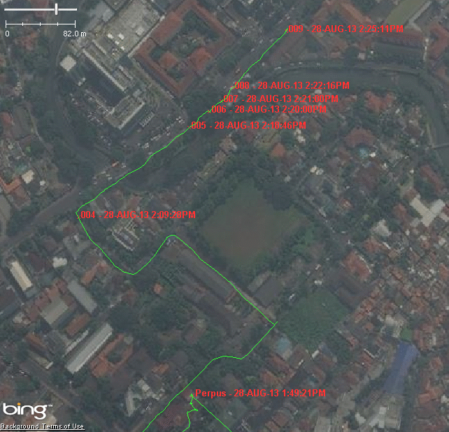
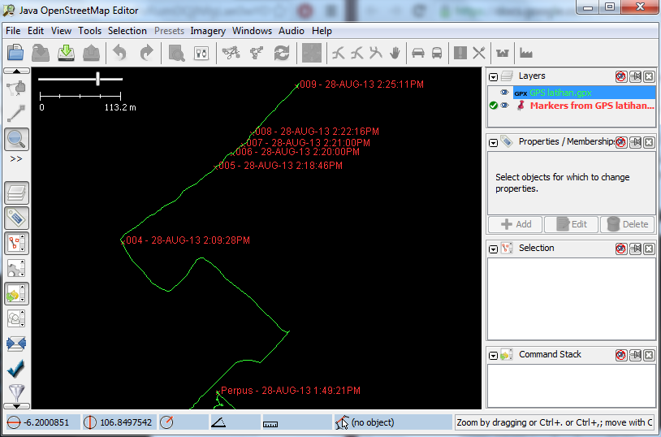

Learning Objectives
Understand GPS and the types of GPS
Turn on GPS
Understand factors that affect GPS accuracy
Understand tracks and waypoints
Collect data using GPS
GPS settings
Copy GPS data (tracks and waypoints) to computer
Open waypoints and tracks in JOSM
Upload GPS tracks using JOSM
Edit OSM based on GPS data in JOSM
In this module we see what a GPS does and how it works. We explore how to operate a GPS and how to use it to create maps. We will explain how to operate the Garmin eTrex Vista HCx, a common GPS used for mapping. There are many other models of GPS which do the same thing, so if you are working with a different one, don’t worry - the principles remain the same.
A GPS is like a mobile phone, except that instead of receiving radio signals from telephone companies, it receives signals from satellites that are going around the Earth. By receiving these signals from the satellites, a GPS is able to calculate its exact location on the planet. It records this location in coordinates, which are two long numbers. One number tells you how far east or west you are - this is called longitude. The second number tells you how far north or south you are - this is called latitude. Every place on Earth has unique geographic coordinates.
For example: -8.639298 Latitude, 116.311607 Longitude is a location in Lombok, Indonesia.
Google Earth software, showing coordinates of a place in Lombok, Indonesia.¶
Garmin eTrex Vista HCx¶
Before turning on your GPS, go outside where you have a clear view of the sky. Because the GPS determines your location by receiving signals from satellites, it won’t work indoors.
On the right side of the GPS, press and hold the Power button. The GPS will start, and it will show you the Satellites page. You should see something like the image below. The GPS is looking for satellite signals. When it has connected to three or more satellites, it will have your location.
Once your location is determined, the Satellites page will disappear and you will see the Main Menu.
A GPS records two kinds of information that are useful for creating maps or saving the coordinates of a place. First, it allows you to save your location in the memory of the GPS. When you save a location, the coordinates will be saved with a name. For example, your first saved point will be named 001, the second 002, and so on. When you save a point, you can write down the number on a piece of paper, along with a note about what it is, and any attributes or indicators you would like to collect. Saved locations on your GPS are called waypoints.
Second, a GPS can save what are called tracks. While a waypoint only saves a single location, a track will save a series of locations wherever you move. For example, a track will record your location every one second, or every one metre, and the result will be a series of dots that show the path of where you have been. Tracks are useful for mapping objects that are represented by lines or shapes, such as the course of a road or the shape of a field.
Note
A GPS can record a single point as well as a path of where you travel. Here the points are numbered in the order they are recorded. The path or track is shown with a green line and the waypoints are shown in red.
To save your current location as a waypoint, click the X button until your reach the Main Menu. Using the joystick, move it so that Mark is highlighted on the screen. Push the joystick button down to open the Save Waypoint page.
You can see on this page some information about the waypoint that you are saving. First is the name. If this is your first waypoint, it probably reads “001”. This is the number you should record on paper along with the information you want to collect with this object. Next you will see the time and date when the point is recorded. Below that are the coordinates, followed by the altitude.
Use the joystick to move to the OK button at the bottom of the screen. Press the joystick button down to save this point. Be sure to write down the number of the point, along with what the place is and any other information you want to record about the place in your notebook.
Press the X button to go to the Map page. You should now see your point on the map.
Now that we have learned how to save points, let’s learn how to turn the track log on and off. When the track log is turned on, it will automatically record your path. It’s good practice to turn on the log when you begin mapping, and turn it off when you are finished. You will then be able to look at the track on a computer and see the path that you mapped. If you would like to map the course of a road, it is a good idea to save a waypoint at the beginning and end of the road, writing in your notebook the name and type of the road, and any other important information about the road.
Click the X button until your reach the page that says Track Log.
To empty the track log (to delete earlier recordings), use the joystick to select Clear, and press the joystick down. The bar at the top should read “0%”.
To turn on the log, move the joystick to highlight On, and press the joystick down. The track log is now recording your path.
Note
Under Setup, you also can set time or distance intervals to track. Time intervals instruct your GPS to record your location at given intervals. If you have a memory card in your GPS, it is good practice to set this to one second, meaning that every second your location will be added to the track log. This may be useful when detailed surveys are needed.
See GPS Settings for more information on setting up the track log.
Press the X button to go to the Map page. As you move you will see your track shown as a series of dots.
Here we demonstrate how to edit some of the core settings of the GPS device. Use this as a reference to set up your GPS properly.
Go to the Main Menu by using the Page button (the X button on the right side of the device). Use the joystick to click Setup, and then click on System.
Some of the settings that can be changed on the System menu are as follows:
GPS: regulates how the GPS sensor works. Choose the Normal option. This tells the device to capture only signals from GPS satellites. The only drawback is that positional accuracy may sometimes be less accurate (about 10-30 metres).
WAAS/EGNOS: WAAS stands for Wide Area Augmentation System, while EGNOS stands for Euro Geostationary Navigation Overlay Service. WAAS/EGNOS is a system of satellites and ground stations that provide GPS signal corrections, giving you a better position accuracy (to less than three metres). Ensure that it is Enabled. The drawback to this feature is that although it provides better accuracy, it will use the GPS battery more quickly.
Battery Type: To optimise power usage, this should match the type of battery in the device. The default is Alkaline.
Text Language: Choose the language for the device.
From the Main Menu, go to . Here the type of measurement units can be set, such as metres, feet and more. The location unit format is also set here (decimal degrees, decimal minutes degrees, second minutes degrees), datum (standard WGS 84) and projection (standard WGS 84).
From the Main Menu, go to . Here the time format is set (12 hours or 24 hours) as well as the time zone. It is good to have the local time set, because all tracks and waypoints saved in the device are also saved with the current time.
Remember that when you press the Page button (the X) you are able to switch between different menus. By editing the page settings, the pages, as well as their order, may be customised.
From the Main Menu, go to .
Add a new page to the list by selecting Add Page. Then select a page such as: Tracks (to see details of your trip), Map (to view maps), or Satellite (to view the satellite status, position, and accuracy).
Click on one of the pages to move it around the list and change the order in which the pages flip.
Remember that tracks are a bread-crumb trail recording your movement, which is useful for mapping roads. On the Track page there are several settings.
From the Track page, click Setup.
The settings are as follows:
Wrap When Full: This option should be checked. It means that when the GPS runs out of internal memory, it will start overwriting the oldest trackpoints to record new ones. It is a good idea to keep this checked, although typically you will be recording tracks to a memory card anyway, making this option unimportant.
Record Method: There are several ways the GPS can record track points:
Distance: tracks a new point each time a certain distance has been covered
Time: tracks a new point when an amount of time has elapsed
Auto: automatically choose method (typically this should be selected)
Interval: This setting indicates how often the GPS will record the track, depending on the method selected in Record Method. Using a high setting (collecting many points) here will result in tracks that are smooth and detailed but will also drain the battery faster. If Record Method is set to Auto, the Interval options will be as follows:
Most often
More often
Normal
Less often
Least often
If Record Method is set to Distance or Time, the options will allow you to set a matching unit of measurement.
Color: This setting is for defining the colour of the track line as shown on the GPS map page.
When you are finished mapping with the GPS you will want to copy the points and tracks to your computer so that you can open them in JOSM.
First, turn off the track log on your GPS by going to the Track page and selecting Off.
Attach the GPS to your computer with the cable. One end should plug into your computer’s USB port, and the other goes into the back of the GPS, beneath the rubber flap at the top. The GPS should be turned on to copy the points and tracks.
You may need to install GPS drivers on your computer. Open your training
folder and find software/USBDrivers_23.exe. Double-click it and
install.
If you don’t have this file, you can download it. Open your internet browser and go to: http://www8.garmin.com/support/download_details .jsp?id=591
Click Download to get the installation file. Locate it on your computer, and double-click to install.
GPSBabel is a program that allows us to copy data from the GPS. It is
saved as GPSBabel-1.5.1-Setup in the software folder (the
exact version number may be different).
If you don’t have GPSbabel already, open your web browser and go to www.gpsbabel.org.
Click Downloads at the top of the page.
Scroll down the page. If your computer uses Windows,
you want to download the installation file for Windows. Click
GPSBabel-1.5.1-Setup.exe. The file will be downloaded to
your computer.
Locate the GPSBabel setup file on your computer. Double-click it to install.
Click Next.
Click I accept and Next.
Continue clicking Next until the program installs.
When the program has finished installing, click Finish to start GPSBabel.
Click in the circle next to the word Device at the top of the window.
In the drop-down menu labelled Format, select Garmin serial/USB protocol
Go down to the middle of the window, under Output. In the drop-down menu labelled Format, select GPX XML:
Click File Name and type a name for your saved file. It should be
something that describes the data, such as the date and the location. For
example: jakarta-07-07-2011.
Make sure your GPS is connected to the computer and turned on.
Click Apply in the bottom right corner of the window.
If all goes well you should see a bar move across the screen, indicating that the data is being retrieved from the GPS. When it is finished, your points and track will be saved in the file that you selected.
Now open JOSM. Go to
Find and select the file that you created with GPSBabel. Click Open.
You should now see your points and tracks loaded into JOSM.
Note
If you are not interested in sharing your tracks publicly on OSM, feel free to skip this section.
Adding GPS tracks to the OSM server is useful because it enables other users to see and use your tracks. For those who do not have a GPS or who can’t access a location, they are still able to benefit from your work and help improve the map.
The easiest way to upload GPS tracks is to download the JOSM plugin DirectUpload:
Open JOSM and go to . Click the plugins tab.
Type directupload in the Search box. Check the box next to the plugin, and then click OK.
Restart JOSM.
Open your GPX file in JOSM.
Go to
Add tags, a description, and choose an option for whom to make the track visible. Unless you have a reason for doing otherwise, choose Public.
Click Upload Trace. If requested to enter a username and password, enter the credentials of your OSM account and click Authenticate.
{kind=link}
{kind=link}
{kind=link}
{kind=link}
{kind=link}
{kind=link}
{kind=link}
{kind=link}
{kind=link}
{kind=link}
{kind=link}
{kind=link}
{kind=link}
{kind=link}
{kind=link}
{kind=link}
{kind=link}
{kind=link}
{kind=link}
{kind=link}
{kind=link}
{kind=link}
{kind=link}
{kind=link}
{kind=link}